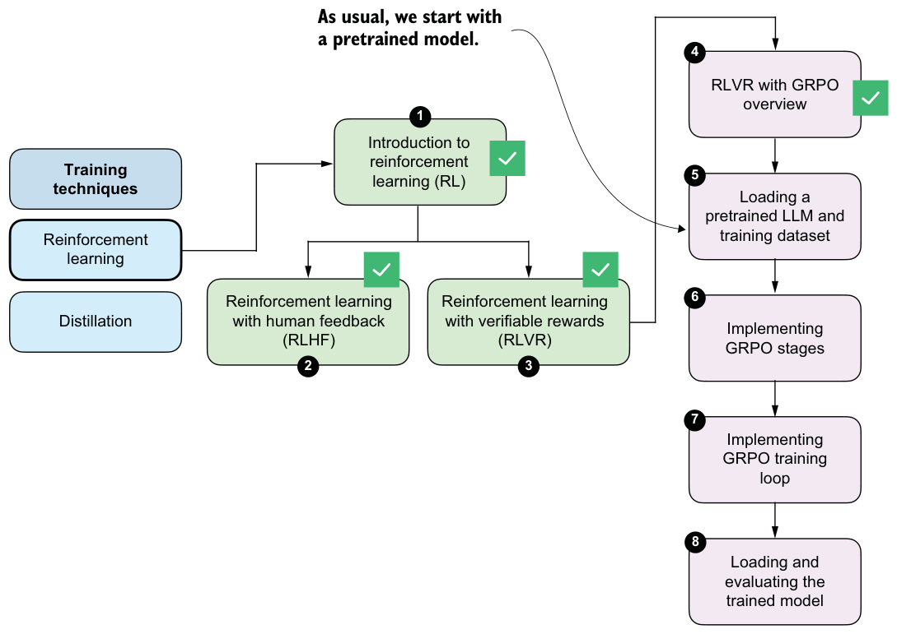
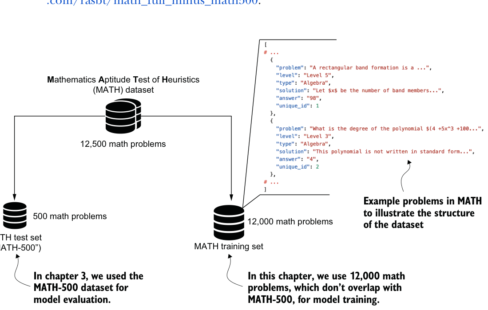

6.3Loading a pretrained model
As in previous chapters, we’ll begin by loading the pretrained model (see stage 5 in figure 6.10), which we’ll then use to generate the rollouts (answers to a prompt) needed for GRPO.

The following listing shows the same code we’ve used previously for loading the tokenizer and base model.
import torch
from reasoning_from_scratch.ch02 import get_device
from reasoning_from_scratch.ch03 import (
load_model_and_tokenizer
)
device = get_device()
device = torch.device("cpu")
model, tokenizer = load_model_and_tokenizer(
which_model="base",
device=device,
use_compile=False
)Note that the preceding code runs on the CPU by default, to ensure you get results that are more consistent with those shown in this chapter. Once you have gone through this chapter in full, I recommend deleting the line device = torch.device("cpu") and running the chapter code on a GPU.
Next, to ensure that the model is loaded correctly, we’ll check it with the temperature and top-p sampler code from chapter 4 on a simple math prompt.
from reasoning_from_scratch.ch03 import render_prompt
from reasoning_from_scratch.ch04 import (
generate_text_stream_concat_flex,
generate_text_top_p_stream_cache
)
raw_prompt = (
"Half the value of $3x-9$ is $x+37$. "
"What is the value of $x$?"
)
prompt = render_prompt(raw_prompt)
torch.manual_seed(0)
response = generate_text_stream_concat_flex(
model, tokenizer, prompt, device,
max_new_tokens=2048, verbose=True,
generate_func=generate_text_top_p_stream_cache,
temperature=0.9,
top_p=0.9
)
print(response)The model prints " \boxed{58}", which is an incorrect answer (83 is correct), but that’s okay because the goal here was merely to make sure that the code runs without issue.
6.4Loading a MATH training subset
Next, we’ll load the dataset that we’ll use to train the model with GRPO. We’ll use a non-overlapping training subset derived from the original MATH dataset, which means that all MATH-500 evaluation problems are explicitly excluded from the training data. This prevents data leakage and ensures a clean separation between training and evaluation, as illustrated in figure 6.11.

To load the 12,000 math problems from the MATH training set shown in figure 6.11, we’ll define the following load_math_train function. It is similar to the load_math500_ test function in chapter 3 except that we specify a different file path.
import json
import requests
from pathlib import Path
def load_math_train(local_path="math_train.json", save_copy=True):
local_path = Path(local_path) url = (
"https://raw.githubusercontent.com/rasbt/"
"math_full_minus_math500/refs/heads/main/"
"math_full_minus_math500.json"
)
backup_url = (
"https://f001.backblazeb2.com/file/reasoning-from-scratch/"
"MATH/math_full_minus_math500.json"
)
if local_path.exists():
with local_path.open("r", encoding="utf-8") as f:
data = json.load(f)
else:
try:
r = requests.get(url, timeout=30)
r.raise_for_status()
except requests.RequestException:
print("Using backup URL.")
r = requests.get(backup_url, timeout=30)
r.raise_for_status()
data = r.json()
if save_copy:
with local_path.open("w", encoding="utf-8") as f:
json.dump(data, f, indent=2)
return data
math_train = load_math_train()
print("Dataset size:", len(math_train))The preceding code should print "Dataset size: 12000" to indicate that the dataset was loaded correctly.
Next, we can print one of the 12,000 entries to get an idea of the dataset structure. For this, we’ll use the pprint function from the pprint standard library because it provides nicer formatting for dictionary entries than the regular print function:
from pprint import pprint
pprint(math_train[4])This is the resulting entry (index 4 corresponds to the fifth entry in the dataset):
{
"answer": "6",
"level": "Level 3",
"problem": (
"Sam is hired for a 20-day period. On days that he "
"works, he earns $\\$60. For each day that he does "
"not work, $\\$30 is subtracted from his earnings. "
"At the end of the 20-day period, he received "
"$\\$660. How many days did he not work?"
),
"solution": (
"Call $x$ the number of days Sam works and $y$ the "
"number of days he does not... Thus, Sam did not "
"work for $\\boxed{6}$ days."
),
"type": "Algebra",
"unique_id": 4,
}As you can see, each dataset example is stored as a dictionary with several fields. For training, the relevant fields are "problem", which serves as the prompt, and "answer", which is the target against which we verify the model’s output using the math verifier.
The dataset also includes a full worked solution in the "solution" field. While such step-by-step solutions could in principle be used to evaluate intermediate reasoning steps, doing so would unnecessarily constrain the model and risk overfitting to a specific solution and style. Instead, we want to allow the model to explore the solution space more freely.